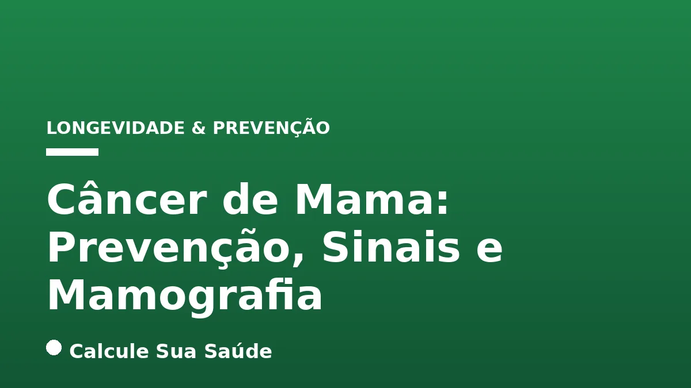

Aviso médico importante
Este conteúdo é educativo e informativo e não substitui a consulta, o diagnóstico ou o tratamento de um profissional de saúde. Em caso de sintomas, procure orientação médica.
Índice do Artigo
- 1. O Que É o Câncer de Mama?
- 2. Tipos de Câncer de Mama: Uma Visão Detalhada
- 3. Fatores de Risco: Compreendendo a Complexidade Multifatorial
- 4. Sinais e Sintomas: O Que Observar e Quando Procurar Ajuda
- 5. Diagnóstico: A Jornada da Confirmação
- 6. Rastreamento e a Importância da Mamografia
- 7. Diretrizes de Rastreamento no Brasil: INCA e Ministério da Saúde
- 8. Riscos e Benefícios da Mamografia: Uma Análise Equilibrada
- 9. Estratégias de Prevenção: Um Estilo de Vida Protetor
- 10. Abordagens Terapêuticas: O Caminho do Tratamento
- 11. Mitos e Verdades sobre o Câncer de Mama
- 12. Panorama Epidemiológico do Câncer de Mama no Brasil
- 13. A Importância do Autoconhecimento e da Busca por Ajuda
- 14. Perguntas frequentes
O câncer de mama representa um dos maiores desafios na saúde pública global, sendo o tipo de câncer mais incidente e a principal causa de morte por câncer entre as mulheres no Brasil e no mundo, excluindo-se os tumores de pele não melanoma. Sua natureza multifatorial e a complexidade de suas manifestações exigem uma abordagem abrangente que englobe desde a compreensão de seus mecanismos até as estratégias mais eficazes de prevenção, detecção precoce e tratamento.
Neste artigo aprofundado, o portal Calcule Sua Saúde, comprometido com a disseminação de informações baseadas em evidências científicas, explora o universo do câncer de mama. Abordaremos sua definição, os diversos tipos, os fatores de risco associados, os sinais e sintomas que demandam atenção, as metodologias diagnósticas, com foco especial no rastreamento por mamografia, e as diretrizes de prevenção e tratamento.
Nosso objetivo é capacitar você com conhecimento robusto e confiável, desmistificando informações e reforçando a importância da vigilância contínua e do acompanhamento médico. A detecção precoce é, sem dúvida, a ferramenta mais poderosa na luta contra essa doença, impactando diretamente as taxas de sucesso terapêutico e a qualidade de vida das pacientes.
Em resumo
- O câncer de mama é a neoplasia mais comum e a principal causa de morte por câncer em mulheres no Brasil e no mundo, exceto o câncer de pele não melanoma.
- É uma doença multifatorial, influenciada por fatores genéticos, hormonais e de estilo de vida, sendo a idade o principal fator de risco.
- A mamografia é o exame padrão-ouro para o rastreamento, recomendada a cada dois anos para mulheres de 50 a 74 anos no Brasil, e sob demanda para as de 40 a 49 anos.
- Sinais como nódulos palpáveis, alterações na pele da mama ou no mamilo exigem investigação imediata por exames de imagem e biópsia.
- A prevenção envolve um estilo de vida saudável, incluindo peso adequado, atividade física, alimentação balanceada e amamentação.
- O tratamento é multidisciplinar, podendo incluir cirurgia, radioterapia, quimioterapia, hormonioterapia e terapias-alvo, com protocolos baseados em evidências científicas.
1. O Que É o Câncer de Mama?
O câncer de mama é uma enfermidade caracterizada pela proliferação descontrolada de células anormais na glândula mamária. Essas células, ao se multiplicarem de forma desordenada, formam um tumor maligno que, se não tratado, pode invadir tecidos adjacentes e se disseminar para outras partes do corpo por meio da corrente sanguínea ou linfática, em um processo conhecido como metástase. Embora seja predominantemente uma doença feminina, representando a vasta maioria dos casos, é importante ressaltar que homens também podem ser afetados, embora em uma proporção significativamente menor, correspondendo a cerca de 1% dos diagnósticos.
A mama é composta por diferentes tipos de tecidos, incluindo ductos (canais que transportam o leite), lóbulos (glândulas produtoras de leite), tecido adiposo e conjuntivo. O câncer pode se originar em qualquer uma dessas estruturas, o que explica a diversidade de tipos histológicos da doença. A compreensão da biologia molecular e genética de cada tipo é fundamental para a definição do prognóstico e da estratégia terapêutica mais adequada.
2. Tipos de Câncer de Mama: Uma Visão Detalhada
A classificação do câncer de mama é complexa e baseia-se na origem das células cancerígenas e em suas características moleculares. Conhecer os tipos mais comuns é crucial para entender a doença e suas abordagens. Os principais incluem:
| Tipo de Câncer de Mama | Características Principais |
|---|---|
| Carcinoma Ductal In Situ (CDIS) | Não invasivo; células cancerígenas restritas aos ductos mamários. Não se espalha para outros tecidos ou órgãos. |
| Carcinoma Ductal Invasivo (CDI) | Mais comum (70-80% dos casos); origina-se nos ductos e se dissemina para o tecido mamário adjacente, podendo metastatizar. |
| Carcinoma Lobular Invasivo (CLI) | Segundo tipo mais comum; origina-se nos lóbulos (glândulas produtoras de leite) e pode invadir outros tecidos. |
| Carcinoma Lobular In Situ (CLIS) | Não invasivo; células anormais nos lóbulos. Considerado um marcador de risco para desenvolver câncer invasivo em ambas as mamas. |
| Câncer de Mama Triplo Negativo | Não expressa receptores de estrogênio, progesterona nem HER2. Mais agressivo e com opções de tratamento mais limitadas. |
| Câncer de Mama Inflamatório | Raro e agressivo; causa inchaço, vermelhidão e calor na mama, sem nódulo palpável distinto. |
| Doença de Paget da Mama | Rara; afeta a pele do mamilo e aréola, frequentemente associada a um carcinoma subjacente. |
Outros tipos menos comuns incluem angiossarcoma e tumor filoide. A identificação precisa do tipo histológico e das características moleculares (como a presença de receptores hormonais e HER2) é essencial para guiar o tratamento.
3. Fatores de Risco: Compreendendo a Complexidade Multifatorial
O câncer de mama não possui uma causa única e definida, sendo resultado de uma complexa interação entre fatores genéticos, hormonais e ambientais/comportamentais. É fundamental compreender que a presença de um ou mais fatores de risco não garante o desenvolvimento da doença, mas aumenta a probabilidade. Os principais fatores de risco incluem:
Idade
A idade é o fator de risco mais significativo. O risco de desenvolver câncer de mama aumenta progressivamente com o envelhecimento, sendo a maioria dos casos diagnosticada em mulheres após os 50 anos.
Fatores Endócrinos e História Reprodutiva
- Menarca Precoce: Primeira menstruação antes dos 12 anos, o que prolonga o período de exposição aos hormônios femininos.
- Nuliparidade: Não ter tido filhos.
- Primeira Gestação a Termo Após os 30 Anos: A gravidez em idade mais avançada pode não conferir o mesmo efeito protetor de gestações mais jovens.
- Menopausa Tardia: Ocorre após os 55 anos, prolongando a exposição hormonal.
- Terapia de Reposição Hormonal (TRH): O uso combinado de estrogênio e progesterona, especialmente por longos períodos, pode aumentar o risco.
Fatores Comportamentais e Ambientais
- Obesidade e Sobrepeso: Particularmente após a menopausa, o excesso de tecido adiposo pode aumentar a produção de estrogênio, elevando o risco. Para mais informações sobre o impacto do peso, consulte nosso artigo sobre Gordura Visceral: Perigos e Estratégias de Redução.
- Sedentarismo: A falta de atividade física regular está associada a um maior risco. A prática de exercícios, como abordado em HIIT vs Aeróbico: Mitocôndria e Saúde, é um fator protetor.
- Consumo de Bebida Alcoólica: Mesmo em quantidades moderadas, o álcool pode aumentar o risco.
- Exposição Frequente a Radiações Ionizantes: Como raios X e tomografias, especialmente em idade jovem.
- Alimentação Não Saudável: Dietas ricas em alimentos ultraprocessados e pobres em nutrientes podem contribuir. Saiba mais em Alimentos Ultraprocessados: Riscos e Identificação e Dieta Mediterrânea: A Mais Recomendada para a Saúde.
Fatores Genéticos e Hereditários
Embora apenas 5% a 10% dos casos de câncer de mama sejam hereditários, ou seja, ligados a mutações genéticas herdadas (como nos genes BRCA1 e BRCA2), o histórico familiar é um fator de risco importante. A atenção deve ser redobrada se houver parentes de primeiro grau (mãe, irmã, filha) com câncer de mama antes dos 50 anos, câncer bilateral, câncer ovariano ou câncer de mama masculino.
Outros Fatores
Alta densidade do tecido mamário e certas condições mamárias benignas, como hiperplasia ductal/lobular atípica e carcinoma lobular in situ (LCIS), também podem aumentar o risco futuro de desenvolver a doença.
4. Sinais e Sintomas: O Que Observar e Quando Procurar Ajuda
A detecção precoce do câncer de mama é fundamental para o sucesso do tratamento. Embora a mamografia seja a principal ferramenta de rastreamento, o autoconhecimento do corpo e a atenção a quaisquer alterações nas mamas são cruciais. Em 90% dos casos de câncer de mama que já apresentam manifestações clínicas, o primeiro sinal é um nódulo palpável. No entanto, outros sinais e sintomas podem indicar a necessidade de investigação. É vital procurar um médico ao notar qualquer uma das seguintes alterações:
| Categoria de Sinal/Sintoma | Descrição Detalhada |
|---|---|
| Nódulo Palpável | Presença de um caroço, endurecimento ou espessamento na mama ou axila, que pode ser indolor e de consistência firme. |
| Alterações na Pele da Mama | Retrações ou covinhas na pele (aspecto de “casca de laranja”), vermelhidão, inchaço, descamação ou feridas que não cicatrizam. |
| Alterações no Mamilo | Retração ou inversão (o mamilo se volta para dentro), desvio, dor, escurecimento, descamação, feridas ou saída de secreção (especialmente aquosa, transparente ou sanguinolenta). |
| Inchaço | Inchaço de toda ou parte da mama, mesmo sem a presença de um nódulo distinto. |
| Dor | Dor persistente na mama ou mamilo que não está relacionada ao ciclo menstrual. |
| Nódulos nas Axilas ou Pescoço | Presença de gânglios linfáticos aumentados e palpáveis nessas regiões. |
| Mudanças no Tamanho, Forma ou Contorno | Assimetria súbita ou alteração perceptível na aparência geral da mama. |
É importante lembrar que muitas dessas alterações podem ser benignas, mas apenas um profissional de saúde pode realizar o diagnóstico correto. A procrastinação na busca por avaliação médica pode atrasar um diagnóstico crucial.
5. Diagnóstico: A Jornada da Confirmação
Quando um nódulo ou outro sinal suspeito é identificado, seja pela própria mulher, por um exame de rotina ou durante o exame clínico das mamas, inicia-se um processo de investigação diagnóstica. Este processo é estruturado e visa confirmar ou descartar a presença de câncer, além de caracterizar a doença caso seja maligna.
Exame Clínico das Mamas (ECM)
Realizado por um médico ou enfermeiro treinado, o ECM é a primeira etapa. O profissional irá palpar as mamas e as axilas em busca de nódulos, alterações na pele, no mamilo ou nos linfonodos. Este exame é complementar aos exames de imagem e ao autoconhecimento da mulher.
Exames de Imagem
Os exames de imagem são essenciais para visualizar o tecido mamário em detalhes e identificar lesões. Os principais incluem:
- Mamografia: É o exame mais importante para o rastreamento e diagnóstico. Utiliza raios X para criar imagens detalhadas da mama, sendo capaz de identificar microcalcificações e nódulos antes que sejam palpáveis.
- Ultrassonografia Mamária: Frequentemente utilizada para complementar a mamografia, especialmente em mamas densas ou para diferenciar nódulos sólidos de cistos (lesões preenchidas por líquido).
- Ressonância Magnética (RM) das Mamas: Indicada em casos específicos, como para mulheres com alto risco genético, para avaliar a extensão da doença em casos de câncer já diagnosticado ou para investigar achados inconclusivos em outros exames.
Biópsia: A Confirmação Definitiva
A confirmação do diagnóstico de câncer de mama é feita exclusivamente por meio da biópsia. Neste procedimento, uma pequena amostra do tecido mamário suspeito é removida e enviada para análise patológica. O patologista examina as células ao microscópio para determinar se são malignas e qual o tipo histológico do câncer. Existem diferentes tipos de biópsia:
- Biópsia por Agulha Fina (PAAF): Remove uma pequena quantidade de células.
- Biópsia por Agulha Grossa (Core Biopsy): Remove um fragmento maior de tecido, permitindo uma análise mais detalhada.
- Biópsia Excisional: Remoção cirúrgica de todo o nódulo ou área suspeita.
A biópsia também permite a realização de testes imunohistoquímicos para identificar a presença de receptores hormonais (estrogênio e progesterona) e do receptor HER2, informações cruciais para a escolha do tratamento.
6. Rastreamento e a Importância da Mamografia
O rastreamento do câncer de mama tem como objetivo detectar a doença em estágios iniciais, antes que os sintomas se manifestem. A detecção precoce aumenta significativamente as chances de cura e permite tratamentos menos invasivos. A mamografia desempenha um papel central nesse processo, sendo o exame de imagem mais eficaz para identificar alterações no tecido mamário que podem indicar a presença de câncer.
A capacidade da mamografia de visualizar microcalcificações e pequenos nódulos, muitas vezes imperceptíveis ao toque, a torna uma ferramenta indispensável. Estudos demonstram que programas de rastreamento mamográfico reduzem a mortalidade por câncer de mama em populações específicas. No entanto, as diretrizes para o rastreamento variam entre diferentes países e instituições, refletindo a ponderação entre os benefícios da detecção precoce e os potenciais riscos do exame.
7. Diretrizes de Rastreamento no Brasil: INCA e Ministério da Saúde
No Brasil, as diretrizes para o rastreamento do câncer de mama são estabelecidas pelo Ministério da Saúde e pelo Instituto Nacional de Câncer (INCA), baseadas em evidências científicas e na realidade epidemiológica do país. É fundamental que as mulheres e os profissionais de saúde estejam cientes dessas recomendações para garantir a melhor abordagem.
| Faixa Etária | Recomendação de Rastreamento (Brasil) | Observações |
|---|---|---|
| Mulheres de 40 a 49 anos | Mamografia
8. Riscos e Benefícios da Mamografia: Uma Análise EquilibradaA mamografia, embora seja a ferramenta mais eficaz para o rastreamento do câncer de mama, não está isenta de considerações sobre riscos e benefícios. Uma análise equilibrada é essencial para uma decisão informada, especialmente em contextos de rastreamento populacional. Benefícios da Mamografia
Riscos da Mamografia
A decisão de realizar a mamografia de rastreamento deve considerar esses pontos, sendo que para a faixa etária de 50 a 74 anos, os benefícios superam claramente os riscos, conforme as diretrizes nacionais e internacionais. 9. Estratégias de Prevenção: Um Estilo de Vida ProtetorA prevenção do câncer de mama não se restringe apenas ao rastreamento, mas abrange também a adoção de um estilo de vida saudável que pode reduzir significativamente o risco de desenvolvimento da doença. Embora nem todos os fatores de risco sejam modificáveis (como idade ou genética), muitos podem ser influenciados por escolhas diárias. Manutenção do Peso Corporal AdequadoA obesidade e o sobrepeso, especialmente após a menopausa, são fatores de risco conhecidos para o câncer de mama. O tecido adiposo produz estrogênio, e níveis elevados desse hormônio podem estimular o crescimento de células cancerígenas. Manter um Índice de Massa Corporal (IMC) saudável é uma estratégia preventiva crucial. Para aprofundar-se nos riscos do excesso de peso, leia sobre Gordura Visceral: Perigos e Estratégias de Redução. Prática Regular de Atividade FísicaO sedentarismo é um fator de risco modificável. A prática de atividade física regular, com um mínimo de 150 minutos de exercícios de intensidade moderada por semana, contribui para a manutenção do peso, regulação hormonal e fortalecimento do sistema imunológico, reduzindo o risco de câncer de mama. Explore os benefícios do exercício em HIIT vs Aeróbico: Mitocôndria e Saúde. Alimentação SaudávelUma dieta rica em frutas, vegetais, grãos integrais e leguminosas, e pobre em alimentos ultraprocessados, gorduras saturadas e açúcares, é fundamental. A Dieta Mediterrânea: A Mais Recomendada para a Saúde, por exemplo, é um padrão alimentar associado à redução do risco de diversas doenças crônicas, incluindo alguns tipos de câncer. Evitar o consumo excessivo de Alimentos Ultraprocessados: Riscos e Identificação também é vital. Evitar o Consumo de Bebidas AlcoólicasO consumo de álcool, mesmo em quantidades moderadas, está associado a um aumento do risco de câncer de mama. A recomendação é limitar ou evitar completamente o consumo de bebidas alcoólicas. AmamentaçãoA amamentação é um fator protetor contra o câncer de mama. Quanto mais prolongado o período de aleitamento, maior a proteção, especialmente se a gestação ocorrer antes dos 30 anos. A amamentação reduz a exposição a certos hormônios e promove a renovação de células mamárias, eliminando possíveis células com lesões genéticas. Minimizar a Exposição a Radiações IonizantesEvitar exposições desnecessárias a radiações ionizantes, como raios X e tomografias, especialmente em idades jovens, é uma medida preventiva, embora o risco da mamografia de rastreamento seja considerado baixo e superado pelos benefícios. A adoção dessas práticas de vida saudável não apenas reduz o risco de câncer de mama, mas também promove a saúde geral e previne outras doenças crônicas, como o Diabetes Tipo 2: Controle e Reversão. 10. Abordagens Terapêuticas: O Caminho do TratamentoO tratamento do câncer de mama é complexo e multidisciplinar, envolvendo uma equipe de especialistas (oncologistas, cirurgiões, radioterapeutas, patologistas, enfermeiros, psicólogos, entre outros) que trabalham em conjunto para oferecer a melhor estratégia para cada paciente. As diretrizes de tratamento, como as da Sociedade Brasileira de Oncologia Clínica (SBOC) e da National Comprehensive Cancer Network (NCCN), são baseadas em rigorosas evidências científicas e são constantemente atualizadas. CirurgiaÉ o principal tratamento para a maioria dos cânceres de mama. Pode ser:
Em muitos casos, a cirurgia também envolve a avaliação e, se necessário, a remoção de linfonodos na axila para verificar a presença de células cancerígenas. RadioterapiaUtiliza radiação de alta energia para destruir células cancerígenas remanescentes na mama ou na região axilar após a cirurgia, reduzindo o risco de recidiva local. Pode ser externa (feixes de radiação direcionados) ou, menos comumente, interna (braquiterapia). QuimioterapiaConsiste no uso de medicamentos que destroem as células cancerígenas em todo o corpo. Pode ser administrada antes da cirurgia (neoadjuvância) para reduzir o tamanho do tumor, ou após a cirurgia (adjuvância) para eliminar células que possam ter se espalhado. HormonioterapiaIndicada para tumores que expressam receptores hormonais (estrogênio e/ou progesterona). Esses medicamentos bloqueiam a ação dos hormônios que estimulam o crescimento do câncer. É uma terapia de longo prazo, geralmente por 5 a 10 anos. Terapias-AlvoSão medicamentos que atuam em alvos moleculares específicos presentes nas células cancerígenas, como no caso de tumores HER2 positivos. Essas terapias são mais seletivas e tendem a ter menos efeitos colaterais que a quimioterapia tradicional. Novas Abordagens e Acesso no SUSO Ministério da Saúde do Brasil tem atualizado o Protocolo Clínico e Diretrizes Terapêuticas (PCDT) para câncer de mama, visando padronizar e melhorar o acesso a tratamentos inovadores no Sistema Único de Saúde (SUS). Isso inclui procedimentos como inibidores das quinases dependentes de ciclina (CDK) 4 e 6, trastuzumab entansina, supressão ovariana medicamentosa e hormonioterapia parenteral, além da ampliação da neoadjuvância para estádios I a III, refletindo o compromisso com a oferta de tratamentos baseados nas mais recentes evidências científicas. 11. Mitos e Verdades sobre o Câncer de MamaA desinformação pode ser um obstáculo significativo na prevenção e no tratamento do câncer de mama. É crucial desmistificar crenças populares e basear-se em evidências científicas. Abaixo, abordamos alguns dos mitos mais comuns: Mito: O câncer de mama só afeta quem tem histórico familiar.
Mito: Quem faz o autoexame não precisa de mamografia.
Mito: Desodorante antitranspirante causa câncer de mama.
Mito: A mamografia de rotina causa câncer devido à radiação.
12. Panorama Epidemiológico do Câncer de Mama no BrasilCompreender a epidemiologia do câncer de mama no Brasil é fundamental para direcionar políticas públicas de saúde e campanhas de conscientização. Os dados revelam a magnitude do desafio imposto por essa doença no país.
Esses dados reforçam a importância de programas de rastreamento bem estruturados, acesso facilitado ao diagnóstico e tratamento, e campanhas contínuas de educação em saúde para toda a população feminina brasileira. 13. A Importância do Autoconhecimento e da Busca por AjudaAlém das diretrizes de rastreamento e das estratégias de prevenção, o autoconhecimento do corpo e a proatividade na busca por ajuda médica são pilares essenciais na luta contra o câncer de mama. Conhecer as próprias mamas, estar atenta a qualquer alteração e não hesitar em procurar um profissional de saúde são atitudes que podem fazer toda a diferença. Autoconhecimento das MamasEmbora o autoexame não substitua a mamografia como método de rastreamento, ele é valioso para que a mulher se familiarize com a aparência e a sensação normais de suas mamas. Ao conhecer seu corpo, ela estará mais apta a identificar qualquer mudança incomum, como um novo nódulo, alteração na pele ou secreção no mamilo. Essa prática deve ser incentivada como parte de uma rotina de cuidado pessoal, sem gerar ansiedade excessiva. Não Hesite em Procurar Ajuda MédicaQualquer sinal ou sintoma suspeito, mesmo que pareça insignificante, deve ser avaliado por um médico. A detecção precoce de um câncer de mama, muitas vezes, depende da prontidão em investigar essas alterações. O profissional de saúde poderá solicitar os exames de imagem e, se necessário, a biópsia para um diagnóstico preciso. Lembre-se que a maioria das alterações mamárias é benigna, mas apenas a avaliação médica pode confirmar. Apoio Psicológico e EmocionalO diagnóstico de câncer de mama pode ser avassalador, gerando medo, ansiedade e incerteza. É fundamental que a mulher e sua família busquem apoio psicológico e emocional durante todo o processo, desde o diagnóstico até o tratamento e a recuperação. Grupos de apoio, psicólogos e assistentes sociais podem oferecer o suporte necessário para enfrentar os desafios da doença. A saúde é um bem precioso e a informação é uma ferramenta poderosa. Ao se manter informada, adotar um estilo de vida saudável e realizar o rastreamento conforme as recomendações, você estará investindo ativamente na sua proteção contra o câncer de mama. 14. Perguntas frequentesQual a idade recomendada para iniciar o rastreamento do câncer de mama com mamografia no Brasil? O autoexame das mamas substitui a mamografia? Quais são os principais fatores de risco para o câncer de mama? O câncer de mama afeta apenas mulheres com histórico familiar? A amamentação protege contra o câncer de mama? Quais são os sinais de alerta do câncer de mama que exigem atenção médica? Desodorantes antitranspirantes causam câncer de mama? Como o diagnóstico do câncer de mama é confirmado? Leia tambémReferências e Fontes1. Ministério da Saúde - Portal Gov.br. Câncer de mama. Disponível em: gov.br 2. Portal TJMG. O que causa o câncer de mama? Disponível em: tjmg.jus.br 3. Einstein Hospital Israelita. Tipos de Câncer de Mama: conheça 7 deles! Disponível em: einstein.br 4. Ministério da Saúde - Portal Gov.br. Câncer de mama: saiba como reconhecer os 5 sinais de alerta. Publicado em 08/10/2021. Disponível em: gov.br 5. Instituto Nacional de Câncer - INCA - Portal Gov.br. Fatores de risco. Publicado em 16/09/2022. Disponível em: gov.br 6. Instituto Oncoguia. Ministério da Saúde passa a recomendar mamografia a partir dos 40 anos. Publicado em 23/09/2025. Disponível em: oncoguia.org.br 7. Organização Pan-Americana da Saúde (OPAS). Brasil lança protocolo clínico e diretrizes terapêuticas para garantir melhores. 2024. Disponível em: paho.org 8. Sociedade Brasileira de Oncologia Clínica (SBOC). Outubro Rosa: conheça mitos e verdades sobre o câncer de mama. Disponível em: sboc.org.br 9. CNN Brasil. Câncer de mama: entenda como amamentação pode reduzir risco. Disponível em: cnnbrasil.com.br 10. Instituto Nacional de Câncer (INCA). Ninho. Diretriz SBOC 2021. Disponível em: ninho.inca.gov.br |